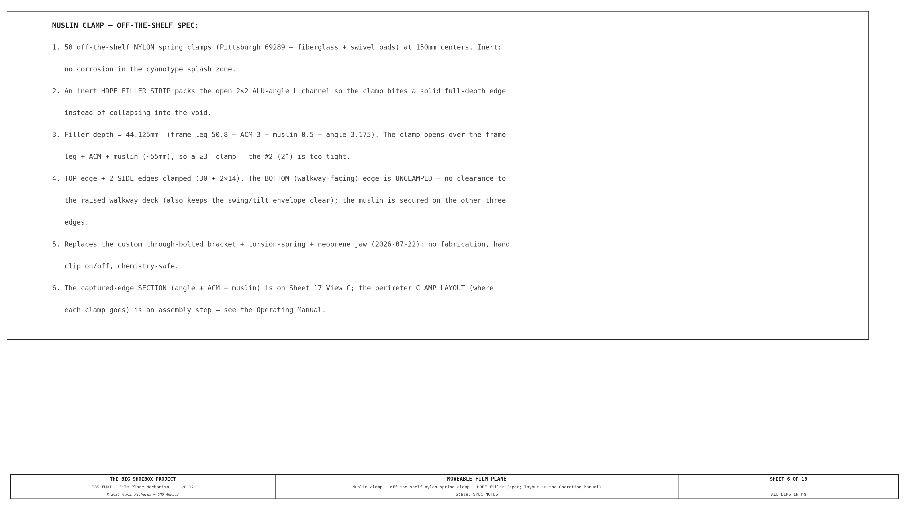
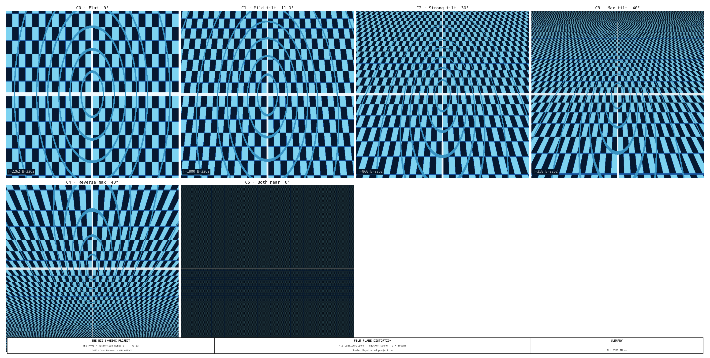

Film Plane — Mechanism Design¶
1. Purpose¶
The configuration the photosensitive film plane is flush against one of the 20ft long-side walls of the container. This report describes a view-camera-style moveable film plane — a mechanism with four independently actuated corners (TL, TR, BL, BR) carrying a fixed-size rigid plane (Option A), allowing tilt, swing, and limited compound movements comparable to a large-format view camera's rear standard.
System context — container floor plan: The floor plan below shows the film plane rail positions in the context of the complete TBS-001 interior, including left end zone (light trap), processing tray and perimeter walkway in the optical zone, and right end zone (4× IBCs in 2×2 stack, pump manifold and filter skid on equipment panel).

Interactive 3D model — the fixed-size rigid film plane on its four floating-corner cross-slide carriages (Option A), posed in an example tilt + swing, with the processing tray and a ghost of the container. Drag to orbit, scroll to zoom; the per-corner detail scenes show each HGR20 rail, carriage, leadscrew, and X/Z cross-slides.
2. Container Reference Geometry¶
| Dimension | Value | Notes |
|---|---|---|
| Interior length | 5,893mm (19 ft 4 in) | Film plane spans this direction |
| Interior width | 2,362mm (7 ft 9 in) | Optical axis = focal length |
| Interior height | 2,388mm (7 ft 10 in) | Film plane height |
| Pinhole position | Center of one 20ft long-side wall | |
| Nominal film plane | Opposite 20ft long-side wall | flush to wall |
| Structural ribs | Every 457mm (18 in) along length | Rail mounting points |
3. Movement Axes¶
The four-corner mechanism supports all view-camera movements. Corners are labeled TL (top-left), TR (top-right), BL (bottom-left), BR (bottom-right) — where left/right refers to the rail span direction and top/bottom to the 7 ft 10 in height direction.
| Axis | Corners Controlled | Max Travel | Effect |
|---|---|---|---|
| Tilt (top) | TL + TR together | 100–2,262mm | Perspective convergence, keystone |
| Tilt (bottom) | BL + BR together | 100–2,262mm | Perspective convergence, keystone |
| Swing (left) | TL + BL together | 100–2,262mm | Left-right perspective skew |
| Swing (right) | TR + BR together | 100–2,262mm | Left-right perspective skew |
| Compound (limited) | Tilt + swing together | 100–2,262mm | Combined tilt+swing — limited range; plane stays flat (no twist) |
| Back focus | All 4 together | 100–2,262mm | Uniform magnification change |
| Rise / Fall | All 4 together, offset vertically | ±200mm | Horizon shift |
| Shift | All 4 together, offset horizontally | ±300mm | Left/right perspective offset |
Maximum tilt angle (single-axis): 40° — set by the cross-slide Z travel (~280mm); the depth rails alone would allow ~65°.
Maximum swing angle (single-axis): 28° — rail-depth limited ≈ 28.7°.
Swing is the binding limit because the plane is 4,499mm wide — the same depth travel over a wider span sweeps the corner further along the rail. Combined tilt+swing is further limited — see §5.
Because the plane is a fixed-size rigid rectangle, its physical height stays 2,388mm at every angle — it does not grow. Corner cross-slides absorb the rigid-rotation arc travel instead, so a single rigid backing panel suffices.
4. Mechanism Design¶
Note: The drawings (Sheets 1–6) and distortion renders show axis tilt/swing — the rigid plane rotates about its center and foreshortens (it never grows), illustrated about the mid-rail position (the film back-focuses anywhere along the rail; flat-at-far-wall is the max-focal-length extreme). The interactive 3D model
models/film-plane.skpalso reflects this.
Four-Corner Frame¶
Each corner of the film plane frame rides on its own independent carriage assembly:

- 4 depth rails — HiWin HGR20 profile, 2,200mm length, mounted at X=150mm (left pair) and X=4,649mm (right pair) on ceiling and floor. Rails run along the 2,362mm optical axis direction; their carriages set each corner's depth (focus / back-focus).
- 8 depth carriages — HGH20CA flanged blocks, 2 per rail, joined by an L-bracket at each corner.
- 4 leadscrews — ¾"-6 Acme, 8 ft (2,438mm) length, one per corner (TL, TR, BL, BR). Each turns in a bronze Acme nut fixed to the corner bracket and drives that corner's depth.
- 8 corner cross-slides (Option A) — a 2-axis X-Z floating stage at each corner (one X slide + one Z slide, ~300mm travel each, on HGR15 rail + block), bolted on top of the depth carriage. These absorb the small in-plane arc travel that a rigid rotation forces on each corner (≈280mm in Z at max tilt, ≈263mm in X at max swing), so the film plane stays a fixed-size flat rectangle instead of stretching.
- Film plane frame — welded 2"×2"×3/16" aluminum angle, a FIXED-SIZE rigid rectangle, 4,499mm × 2,388mm (rail span × container height). Each corner connects to its cross-slide through a rod-end spherical bearing (GIR25-DO or equivalent, 25mm bore), which provides the angular freedom; the cross-slide provides the translation. Together they let the rigid plane tilt and swing without the frame ever changing size. The following diagrams show the range of movements of the film plane.

Viewed from above, the full range of swing movement can be seen above. Since both side rails allow the same range of movements, it allows the maximum range of creative control.

View from the side, the full range of tilt movement can be seen above. Since both the top and bottom rails allow the same range of movements, it allows the maximum range of creative control.
Mechanism Components¶
The master diagram for the components can be see in the diagram below. The following section discuss the details.

Why Rod-End Spherical Bearings + Cross-Slides¶
The film plane is a fixed-size rigid rectangle; tilt and swing are a true rigid-body rotation of that rectangle. A rigid rotation moves each corner along an arc — partly along its depth rail (handled by the leadscrew carriage) and partly across it (in X and Z). The 2-axis cross-slide absorbs that across-rail travel, and the rod-end spherical bearing (±45° freedom in all axes) takes up the angular change so nothing binds. This pairing is what lets a rigid plane tilt/swing without stretching — the earlier scheme instead let the frame twist into a ruled surface and grow, which a fixed-size plane does not do.
Actuation¶
Each of the four leadscrews is turned by an 8" cast aluminum handwheel (¾" bore). One turn of the ¾"-6 screw = 4.2mm travel. A SS316 locking collar on each screw holds position during exposure.
Named movement modes: - Pure tilt: turn TL and TR handwheels together by the same amount; turn BL and BR by the same amount (different from TL/TR). - Pure swing: turn TL and BL together; turn TR and BR together. - Back focus: turn all four handwheels by the same amount. - Compound: turn all four independently.
Optional electric actuation: replace the handwheels with Progressive Automations PA-14 12V linear actuators (20" / 508mm stroke, 150 lb force rating). Four actuators, one per corner, each controlled by a panel-mount DPDT momentary switch. A labeled panel outside the container allows full repositioning without entry.
Fixed-Size Plane — No Variable Geometry¶
Because the plane is a fixed-size rigid rectangle, its physical dimensions never change: the along-plane height stays 2,388mm at every tilt angle. The arc travel that the rotation forces on each corner is taken up entirely by the cross-slides (≈280mm Z at max tilt, ≈263mm X at max swing), not by the frame.
Single rigid backing panel: the backing is one flat ACM (aluminum composite) sheet, 4,499mm × 2,388mm, bonded to the rear of the angle frame — the panel simply rotates with the rigid plane.
5. Tilt / Swing Configurations¶
The plane stays flat at all times, so it is always a single tilt or swing (or a limited combination). Corner depths below are about the mid-rail center (1,181mm) — add the focus offset to reposition the whole plane. Film height is constant.
| Config | Name | TL | TR | BL | BR | Tilt | Swing | Film Height |
|---|---|---|---|---|---|---|---|---|
| C0 | Flat | 1181 | 1181 | 1181 | 1181 | 0° | 0° | 2,388mm |
| C1 | Mild tilt | 953 | 953 | 1409 | 1409 | 11.0° | 0° | 2,388mm |
| C2 | Strong tilt | 557 | 557 | 1805 | 1805 | 31.5° | 0° | 2,388mm |
| C3 | Max tilt | 414 | 414 | 1948 | 1948 | 40.0° | 0° | 2,388mm |
| C4 | Mild swing | 923 | 1439 | 923 | 1439 | 0° | 6.6° | 2,388mm |
| C5 | Strong swing | 412 | 1950 | 412 | 1950 | 0° | 20.0° | 2,388mm |
| C6 | Max swing | 125 | 2237 | 125 | 2237 | 0° | 28.0° | 2,388mm |
Depths measured from the pinhole wall about the mid-rail center. Tilt = asin(2·Δd_top-bottom / FP_H) about the plane center (FP_H=2388); swing = asin(2·Δd_left-right / FP_W) (FP_W=4499). Rail positions: left X=150mm, right X=4,649mm.
Combined tilt+swing is limited — the corners must all stay on the rails, so the full single-axis maxima cannot be used together.
6. Optical Distortion Summary¶
The six achievable flat configurations (C0–C5) on a checker grid (D = 8,000mm). Because Option A's plane is always flat, each render is a pure tilt or swing; the former compound twist is no longer producible:

A detailed analysis of the optical distortions can be found here.
7. Parts List¶
All items ship within the United States. Local Southern California pickup noted where available.
Structural & Rails¶
| Item | Spec | Qty | Source A | Source B | Est. Unit |
|---|---|---|---|---|---|
| Linear guide rail HGR20 | 2,200mm | 4 | Automation Overstock, Gardena CA | McMaster-Carr #5901T777 | $45 |
| Rail carriage HGH20CA | Flanged block | 8 | Automation Overstock / Amazon | McMaster-Carr | $18 |
| Acme leadscrew ¾"-6 | 8 ft length | 4 | Roton Products (LA area) | McMaster-Carr #6289K36 | $95 |
| Acme nut bronze ¾"-6 | — | 4 | Roton Products | McMaster-Carr #6289K512 | $12 |
| Handwheel 8" dia | ¾" bore, cast aluminum | 4 | Grainger (Anaheim / LA / SD) | McMaster-Carr #6440K64 | $35 |
| Locking collar SS316 | ¾" bore | 4 | McMaster-Carr #6436K12 | Fastenal (SoCal) | $12 |
| Corner bracket L-plate | ¼" alum. plate, 6"×8" | 4 | Metal Supermarkets SoCal | Online Metals | $20 |
| Cross-slide rail HGR15 (Option A) | 300mm, X-Z stage | 8 | Automation Overstock, Gardena CA | McMaster-Carr | $25 |
| Cross-slide carriage HGH15CA (Option A) | Flanged block | 8 | Automation Overstock / Amazon | McMaster-Carr | $12 |
| Cross-slide intermediate plate (Option A) | ¼" alum., joins X slide to Z slide | 4 | Metal Supermarkets SoCal | Online Metals | $15 |
| Rod-end spherical bearing | GIR25-DO or equiv., 25mm bore | 8 | McMaster-Carr #60645K73 | Amazon Industrial | $22 |
| Pivot pin SS316 | 1" dia × 8" long | 8 | McMaster-Carr #98173A150 | Fastenal (SoCal branches) | $8 |
Items in bold are new for Option A — the 2-axis X-Z cross-slide stage at each corner (8 slides total, ≈300mm travel) that lets the fixed-size rigid plane tilt/swing without stretching. The two 5,893mm T-slot beams of the original two-beam design remain removed.
Film Plane Frame¶
| Item | Spec | Qty | Source A | Source B | Est. Unit |
|---|---|---|---|---|---|
| Aluminum angle 2"×2"×3/16" | 8 ft lengths | 10 | Metal Supermarkets SoCal | Online Metals | $22 |
| Dibond ACM panel 4mm | 4 ft × 8 ft sheets — single rigid backing, 4,499×2,388mm | 6 | Grimco, City of Industry CA | Signwarehouse | $85 |
| Black EPDM foam tape 1"×½" | 50 ft rolls | 3 | McMaster-Carr #8614K84 | Grainger | $28 |
| Rosco Duvetyne | 60" wide, 10 yd | 1 | B&H Photo | Rosco direct | $95 |
| 6-mil black poly sheeting | 10 ft × 100 ft | 1 | Home Depot (local, all SoCal) | Uline | $65 |
| 2" black Gorilla Tape | 35 yd rolls | 6 | Home Depot / Target (local) | Amazon | $12 |
Wall-Seat Saddles¶
Each of the 8 rail ends anchors to the container — 6 of them with a standalone IBC-style wall-seat saddle (a back-plate + horizontal seat the rail end rests on + triangular gusset, dims reused from the IBC frame wall seats, through-bolted with a 4-bolt pattern to an exterior wall plate), and the 2 bottom-right ends (BR, near + far) with a combined corner plate shared with the right walkway (see below). The container shell carries the lateral rigidity, so no cross-cage is needed; this also frees the near/far Yd footprint and removes the near-wall equipment clash. Costs ~110mm of carriage travel at each end (immaterial to the design). The rails now run the full width saddle-to-saddle (Yd 0 → C_WID).
Right vs left. The right rails (X 4649, TR + BR) are permanently bolted into place. The left rails (X 150, TL + BL) drop into their saddles on knurled thumb screws so they lift out for transport.
Combined corner plate (rev 12). At each bottom-right corner (near and far) the film plane and the right walkway terminate at the same wall station, so a single 10mm combined corner plate seats both — the bottom film rail (BR) on a 150mm seat and the right walkway long beam on a 70mm seat — bolted through the wall with a shared interior/exterior plate pair. This replaces the 2 BR wall-seat saddles. The plate is single-sourced in the overview generator (fp_combined_corner_plate) and reused by both the film-plane and walkway 3D models; the film-plane model skips the BR saddle and draws the combined plate instead. See Walkway Report §4.3.
Transport mode. The film-plane left rail is continuous (no demountable center segment): the light lock (Ø900 housing + drum) is offset (DRUM_CX = −400) and exits through the hinge-panel punch-out bay rather than rotating within the rail span. For transport, the panel + drum SWING ~56° about the pivot and the drum cage transitions X=150, so the two left film rails (TL + BL) and the muslin screen are struck first — the left rails lift out of their thumb-screw saddles and re-seat to the film datum on re-deployment — see Hinged Panel Report §5.4 for the conversion sequence.
| Item | ICP # | Spec | Qty | Source A | Source B | Est. Unit |
|---|---|---|---|---|---|---|
| Mild steel plate 8mm (laser/plasma cut + welded) | ICP-11 | back-plate + exterior plate + seat + gusset per saddle; ~21 kg total over 6 saddles | 6 saddles | Metal Supermarkets SoCal | Online Metals — A36 steel plate | ~$53/saddle est. |
| Combined corner plate, 10mm (BR, near + far) | ICP-11b | Shared with the right walkway — carries the BR film rail (150mm seat) + walkway right beam (70mm seat). Counted in the walkway BoM (master-shopping-list §7b) — not re-costed here. | 2 (ref) | Metal Supermarkets SoCal | Online Metals — A36 steel plate | (walkway BoM) |
| M12×90mm hex through-bolt + nut + washers, SS | ICP-12 | Wall sandwich through-bolt (interior↔exterior plate); 4 per saddle × 6 = 24 + 4 spare | 28 | McMaster-Carr — A2 cap screws | Amazon — M12 stainless bolts | ~$2.50 est. |
| M8×25mm knurled thumbscrew DIN 464 | ICP-13 | Left-rail drop-in hold-down (lifts out for drum swing); 2 per saddle × 4 left saddles = 8 + 4 spare | 12 | Amazon — DIN 464 M8 knurled SS | Maedler North America — DIN 464 M8 SS | ~$3 est. |
| M8 hex fixing bolt + nut, SS | ICP-14 | Right-rail permanent fixing (TR rail bolted to seat; BR is fixed by the combined plate); 2 per saddle × 2 TR saddles = 4 + spare | 8 | McMaster-Carr — A2 stainless | Amazon — M8 stainless bolts | ~$2 est. |
Quantities: 6 standalone saddles + 2 combined corner plates = 4 rail corners × near + far wall. The 2 bottom-right (BR) ends use the combined corner plate (carried in the walkway BoM), leaving 6 standalone saddles here. Each saddle: 1 back-plate + 1 exterior plate + 1 seat + 1 gusset (8mm plate) + 4× M12 through-bolts. Hold-downs: thumb screws on the 4 left saddles (8), hex fixing bolts on the 2 TR saddles (4). Subtotal ~$470 — roughly cost-neutral with the retired brace cage (the combined plates shift ~$130 of plate/bolt cost into the walkway BoM).
Muslin Clamp System¶
See Muslin Clamp System — Mechanism Design for the full clamp specification, parts list, and engineering drawing.
Optional Electric Actuation¶
| Item | Spec | Qty | Source A | Source B | Est. Unit |
|---|---|---|---|---|---|
| PA-14 linear actuator | 12V, 20" stroke, 150 lb | 4 | Progressive Automations | Amazon | $185 |
| 12V 30A power supply | Enclosed | 1 | Mouser | Digi-Key | $55 |
| DPDT momentary rocker | Panel-mount, 20A | 4 | Mouser | Grainger | $8 |
Estimated materials total (manual actuation, incl. wall-seat saddles + Option A cross-slides): ~$3,538 (rev 12: the 2 BR saddles move to the walkway's combined corner plates) Excludes fasteners, fabrication labor, and electric actuation option. Option A net change vs the earlier four-corner design: added 8 cross-slide rails +$200, 8 cross-slide carriages +$96, 4 intermediate plates +$60 (= +$356); removed the folding-backing piano hinge –$56 → net +$300. The single rigid ACM backing replaces the hinged two-panel system.
Local SoCal Metal Sourcing¶
- Metal Supermarkets — Anaheim (714-630-8463), Van Nuys (818-988-1301), San Diego (619-280-7600). Will cut to length on-site, no minimum order.
- Grimco — City of Industry, CA. Sign-industry ACM panel supplier, large sheet stock.
- Automation Overstock — Gardena, CA. Industrial surplus linear motion components; walk-in available.
- Grainger — branches throughout LA, Orange County, San Diego. Same-day local pickup.
- Roton Products — ships from the LA area; Acme screw stock cut to length.
8. Maintenance¶
| Interval | Task |
|---|---|
| Before each session | Inspect muslin clamp engagement — see Clamp System |
| Before each session | Verify all four locking collars are tight after repositioning |
| Before each session | Check EPDM foam edge seal for tears or compression set |
| Monthly | Lubricate HGR20 rails and HGH20CA carriage blocks (lithium grease) |
| Monthly | Inspect Acme leadscrew threads and bronze nuts for wear |
| Every 6 months | Check rod-end spherical bearings for play — replace if radial slop exceeds 0.2mm |
| Every 6 months | Inspect Duvetyne blackout curtains for light leaks (pinholes, fraying) |
| Annually | Check ACM panel hinge pins for corrosion; replace if stiff |
| Annually | Verify rail mounting bolts for torque at all four rail positions |
| Before transport | Lock all four corners at matching depth; tighten locking collars |
9. Source References¶
- HIWIN HGR20 Linear Guideway — 20mm profile linear guide rail and HGH20CA carriage block specifications.
- McMaster-Carr GIR25-DO Rod-End Bearing — Spherical rod-end bearing specifications (25mm bore).
- Progressive Automations PA-14 — 12V linear actuator specifications (optional electric actuation).
- Tilt-Swing Front Board Report — Front board mechanism for combined distortion analysis.
- Equipment Layout Report — Rail positions and shadow-free zone verification.
© 2026 Alvin Richards — Released under GNU AGPLv3